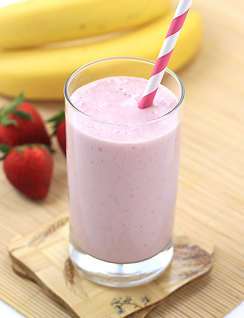

Buttermilk Pancakes $15.99
Buttermilk Pancakes have a light and spongy texture and their flavor only hints of the richness and tanginess
that buttermilk offers.Buttermilk pancakes are the ultimate comfort food no matter which way you stack, slather, syrup’ize or slice ’em.

Diner Double $12.99
The American Vintage '50s Diner Double Beef burger is, if my weak Japanese skills can be trusted, their image of a 1950s diner steak plate, but in hamburger form:
double 100 percent beef patties with a fried egg, a slice of cheese, onions, Chicago-style steak sauce, and a mashed potato sauce on a classic whole wheat bun.

Godzilla Milkshake $18.99
Delicious milo milkshake which taste so yummy and very refreshing. This is a great way to make kids drink milk. It is a drink that
is traditionally made by blending cow's milk, ice cream, and flavorings or sweeteners such as butterscotch, caramel sauce, chocolate syrup, fruit syrup, or whole fruit into a thick, sweet, cold mixture.
Country Delight $16.99
Butter and especially stronger oils, such as walnut, can also add flavor to bread. Dry milk powder adds flavor to bread and can soften its texture, as in the
case of this basic white sourdough.Nuts make a lovely addition to breads, but because they are prone to rancidity, always taste them before adding them to dough.

Egg Attack $15.99
Press down on the bun. Like slurping a crawfish head or licking a yogurt lid, puncturing the yolk via bun compression is tactilely satisfying. When you do,
watch it ooze, egg yolk lewdly spilling over the sides of the sandwich.The yellow against the char of the patty makes for an appealing visual contrast. The controlled spill feels very art school.

Oreo Dream $11.99
This recipe is super kid-friendly, easy to make, and delicious. A favorite for kids' 'How To' speeches or just to enjoy
on a hot day. This sweet treat is a chocolate lover's dream! Best eaten with a spoon and straw. If you prefer a thicker consistency, add more ice cream and less milk. Enjoy!
Upma $9.99
Upma is a traditional Indian breakfast made with sooji (also called rava in south). It’s more common in South India but now I see it just as much everywhere in India.
Rava Upma is often served with coconut chutney and filter coffee. I mostly eat it as much but of course the addition of chutney (& filter coffee!) makes it even more appetizing.

Strawberry Banana Milkshake $8.99
Shakes are a summertime staple around here but with sweet, spring strawberries hitting the stores we think it’s high time to take an early plunge
into shake making. Oh, that poor dog in a dress.
Idli Batter $4.99
Idli is a steamed cake made with a rice and lentil fermented batter. The same batter is also used to make a
crepe called dosa which is often filled with spicy potato filling among many other things. Idli is a steamed savory cake made with the fermented batter.

Dry Fruit Milkshake $7.99
It is an ideal drink for growing up kids or for people looking for energy drinks. This dry fruits milkshake is very filling and you might like to skip a meal after having it.
I have used soy milk instead of regular milk to make it. You can use regular milk or also make with almond milk.
Chicken Fajitas $22.99
Easy Chicken Fajitas are one of our all-time favorite dinners. Tender juicy chicken breasts, fresh crisp peppers, and sweet onions tossed in an easy homemade seasoning and piled high
in tortillas. Top these easy fajitas with cheese, sour cream, lettuce, guacamole, and Pico de Gallo!

Flipino Chicken $17.99
Chicken braised in vinegar and soy sauce with lots of garlic. This easy, savory chicken dish has become a staple in my home. As this simmers, your kitchen fills with an intoxicating sweet
and sour aroma that will leave you anxious to eat.

Aloo Parantha $5.99
Aloo Paratha is a bread dish originating from the Indian subcontinent. It is a breakfast dish originated from the Punjab region. The recipe is one of the most popular breakfast dishes throughout
the western, central and northern regions of India as well as the eastern regions of Pakistan.

Chicken Biryani $10.99
Biryani is a mixed rice dish originated by Muslims of the Indian subcontinent. It is made with Indian spices, rice, and meat, and sometimes, in addition, eggs and/or vegetables such as potatoes in
certain regional varieties.